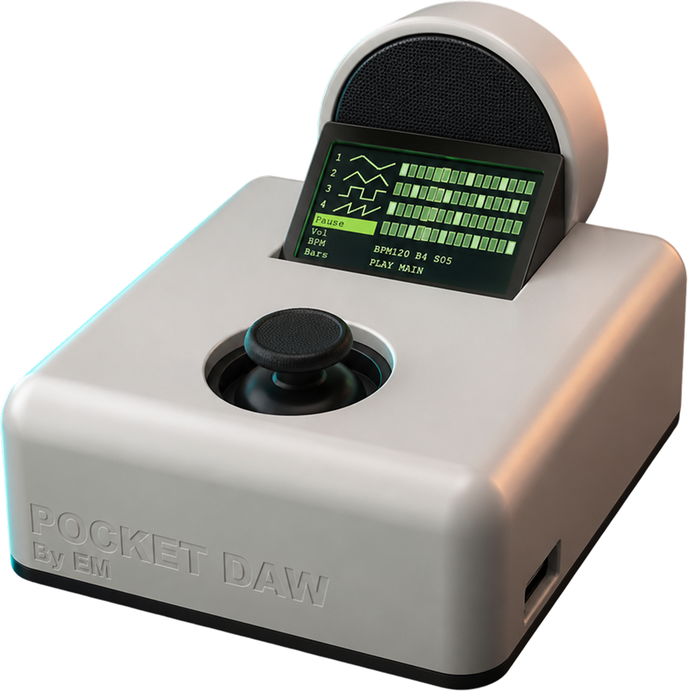
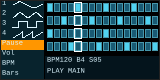
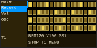
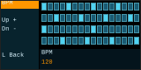
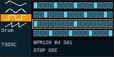
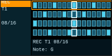
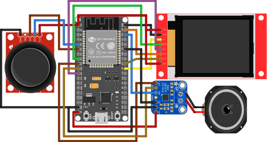

獨立音量、音色與 step pattern
Digital Design & Fabrication / Embedded Music Instrument
Pocket DAW
可攜式硬體音序器與合成器
Pocket DAW 將桌面音樂工作站常用的 loop 編曲、音色控制與即時錄音， 收斂成一台可手持操作的獨立樂器。ESP32 WROVER 負責音訊合成、 TFT 介面與輸入判讀；外殼則以 Fusion 建模、3D 列印完成， 讓電子模組、握持角度與操作動線整合在同一個尺寸內。

Standalone Music Interface
4 Tracks / 32 Steps / Live Recording
32-step loop, 1-8 bars per pattern
ST7735S TFT, partial refresh UI
I2S synthesis with MAX98357A
01
作品概念
Pocket DAW 的目標不是複製完整 DAW 軟體，而是把即興創作最需要的節奏、 旋律、音色與錄音流程，整理成一個可拿起就用的硬體介面。使用者能在主畫面 檢視四軌 pattern，透過搖桿切換選單、調整參數、寫入音符，最後直接由內建音訊輸出播放。
- 單一搖桿同時負責導覽、確認、返回與八方向音符輸入。
- 四軌安排可分配 bass、lead、drum 與 texture，形成可疊加的 loop 結構。
- 外殼預留螢幕開窗、控制斜面與走線空間，兼顧握持與維修。
02
數位製造設計
機構量測
Fusion 建模
列印組裝
外殼先以實際模組尺寸建立約束，再決定面板斜度、螢幕開口、搖桿位置與內部固定空間。 白色外框提供保護與視覺邊界；深色面板集中操作焦點，也讓螢幕與控制器在展場光線下更容易辨識。
03
操作介面





04
互動與錄音
Navigation
搖桿上 / 下用於移動游標或微調數值，右方向負責確認、進入選單與播放切換，左方向回到上一層。
Recording
啟動錄音後先等待 loop 回到第一拍，再於每個 step 取樣搖桿方向；無有效方向時保留休止。
C
D
E
F
G
A
B
C+
05
系統架構
Joystick
Input Controller
Sequencer
Audio Engine
I2S Amp
Speaker
程式依職責拆成輸入、防抖、共享狀態、音序器、音訊引擎與顯示刷新。播放時只在臨界區複製必要狀態， 音訊 task 使用固定 buffer 進行振盪器、包絡與混音計算，降低 UI 更新對聲音輸出的干擾。
06
硬體連接

07
核心規格
- 控制核心
- ESP32 WROVER module, FreeRTOS tasks
- 音訊輸出
- MAX98357A I2S DAC / Class-D amplifier
- 輸入方式
- 2-axis analog joystick + push switch
- 音色
- Sine, Triangle, Square, Saw, Drum voice
- 節奏控制
- BPM, bars, master / track volume